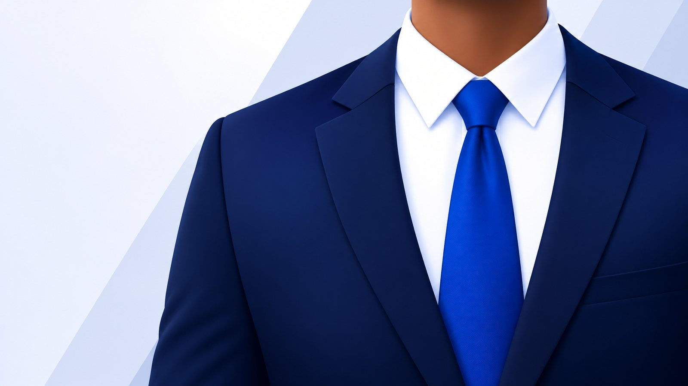

<!DOCTYPE html>
<html lang="pt">
<head>
<meta charset="UTF-8">
<meta name="viewport" content="width=device-width, initial-scale=1">
<title>Nó Perfeito — Aprenda a dar o nó na gravata</title>
<link rel="preconnect" href="https://fonts.googleapis.com">
<link href="https://fonts.googleapis.com/css2?family=Red+Hat+Display:wght@700;800;900&family=Red+Hat+Text:wght@400;500;600;700&display=swap" rel="stylesheet">
<style>
:root{--bg:#f5f7fb;--card:#fff;--line:#e2e7f0;--navy:#0c1f45;--txt:#0c1f45;--mut:#51607c;--cy:#16c5d2;--cyD:#0b8f9a;--cyS:#e3f8fa;--stage:#e8edf6;--ok:#0b8f9a}
*{box-sizing:border-box;margin:0;padding:0}
html{scroll-behavior:smooth;scrollbar-color:#c5cede var(--bg)}
html,body{background:var(--bg);color:var(--txt);font-family:"Red Hat Text",system-ui,sans-serif;-webkit-font-smoothing:antialiased}
button{font:inherit;color:inherit;cursor:pointer;border:0;background:none;-webkit-tap-highlight-color:transparent}
a{color:inherit;text-decoration:none}
::selection{background:var(--cy);color:var(--navy)}
:focus-visible{outline:3px solid var(--cyD);outline-offset:3px;border-radius:6px}
h1,h2,h3{font-family:"Red Hat Display",system-ui,sans-serif;font-weight:800;letter-spacing:-.02em;text-wrap:balance;color:var(--navy)}
.ico{width:1.15em;height:1.15em;flex:none;fill:none;stroke:currentColor;stroke-width:2.4;stroke-linecap:round;stroke-linejoin:round}
.ico.fill{fill:currentColor;stroke:none}
.page{max-width:1160px;margin:0 auto;padding:0 20px 48px}

/* header */
.hdr{display:flex;align-items:center;justify-content:space-between;gap:16px;height:72px}
.logo{display:flex;align-items:center;gap:8px;font-family:"Red Hat Display",sans-serif;font-weight:900;font-size:24px;color:var(--navy);letter-spacing:-.02em}
.logo span{color:var(--cyD)}
.logo svg{width:22px;height:34px}
.nav{display:flex;gap:6px}
.nav a,.nav button{font-weight:600;font-size:15px;padding:10px 14px;border-radius:10px;border-bottom:2px solid transparent;transition:background .2s}
.nav a:hover,.nav button:hover{background:#e9eef6}
.nav .cur{border-bottom-color:var(--cy);border-radius:10px 10px 0 0}
.hdr{position:relative}
.mbtn{display:none;width:44px;height:44px;border-radius:12px;place-items:center;color:var(--navy);transition:background .2s}
.mbtn:hover{background:#e9eef6}
.mbtn .ico{width:24px;height:24px}

/* hero */
.hero{position:relative;display:grid;align-items:center;background:linear-gradient(100deg,#fff,#e9eefb);border-radius:24px;overflow:hidden;min-height:440px}
.hero .copy{position:relative;z-index:1;padding:44px 0 44px 44px;max-width:47%}
.hero h1{font-size:clamp(32px,4.6vw,56px);line-height:1.02;font-weight:900}
.hero h1 em{font-style:normal;color:var(--cyD)}
.hero p{margin:16px 0 26px;font-size:18px;line-height:1.5;color:#27375a;max-width:30ch}
.pill{display:inline-flex;align-items:center;gap:10px;height:54px;padding:0 28px;border-radius:27px;background:var(--cy);color:var(--navy);font-weight:700;font-size:16px;box-shadow:0 8px 20px -8px rgba(11,143,154,.7);transition:background .2s,transform .15s,box-shadow .2s}
.pill:hover{background:#3fd6e1;box-shadow:0 12px 24px -8px rgba(11,143,154,.75)}
.pill:active{transform:scale(.97)}
.hero .art{position:absolute;inset:0 0 0 40%;-webkit-mask-image:linear-gradient(90deg,transparent,#000 22%);mask-image:linear-gradient(90deg,transparent,#000 22%)}
.hero .art img{width:100%;height:100%;object-fit:cover;object-position:62% 25%;display:block}

/* sections */
.sect{margin-top:44px}
.sec-h{position:relative;padding-top:14px}
.sec-h::before{content:"";position:absolute;top:0;left:0;width:48px;height:4px;border-radius:2px;background:var(--cy)}
.sec-h h2{font-size:clamp(24px,3.4vw,32px)}
.sec-h p{color:#27375a;font-size:17px;margin-top:2px}
.grid{display:grid;grid-template-columns:repeat(6,1fr);gap:16px;margin-top:20px}
.kcard{position:relative;display:flex;flex-direction:column;text-align:center;background:var(--card);border:1px solid var(--line);border-radius:14px;overflow:hidden;box-shadow:0 6px 16px -10px rgba(12,31,69,.25);transition:transform .25s cubic-bezier(.16,1,.3,1),box-shadow .25s,border-color .2s}
.kcard:hover{transform:translateY(-4px);box-shadow:0 16px 28px -14px rgba(12,31,69,.35);border-color:var(--cy)}
.kcard:active{transform:translateY(-1px)}
.kcard .th{background:#eef1f9;aspect-ratio:1/1.32;overflow:hidden}
.kcard .th img{width:100%;height:100%;object-fit:cover;object-position:50% 0;display:block;transition:transform .5s cubic-bezier(.16,1,.3,1)}
.kcard:hover .th img{transform:scale(1.05)}
.kcard .body{padding:12px 10px 14px;display:grid;gap:2px;justify-items:center;flex:1}
.kcard .nm{font-family:"Red Hat Display",sans-serif;font-weight:800;font-size:17px;color:var(--navy)}
.kcard .alt{font-size:13.5px;color:var(--mut)}
.kcard .lvl{font-size:12px;font-weight:600;color:var(--mut);display:flex;gap:6px;align-items:center;margin-top:4px}
.dots{display:inline-flex;gap:3px}
.dots i{width:7px;height:7px;border-radius:50%;background:#d3dae6}
.dots i.on{background:var(--cy)}
.go{width:30px;height:30px;border-radius:50%;background:var(--navy);color:#fff;display:grid;place-items:center;font-size:14px;margin-top:8px;transition:background .2s}
.kcard:hover .go{background:var(--cyD)}
.kcard .donemark{position:absolute;top:8px;right:8px;width:26px;height:26px;border-radius:50%;background:var(--cy);color:var(--navy);display:grid;place-items:center;font-size:14px}
.tips{display:grid;grid-template-columns:repeat(3,1fr);gap:28px;margin-top:20px}
.tips h3{font-size:18px;margin-bottom:6px}
.tips p{color:#27375a;line-height:1.55;font-size:15.5px}
.band{margin-top:48px;background:var(--navy);color:#fff;border-radius:18px;padding:26px 30px;display:flex;align-items:center;gap:24px;flex-wrap:wrap}
.band .t{flex:1;min-width:220px}
.band h2{color:#fff;font-size:22px}
.band p{color:#c7d2e8;margin-top:2px}

/* lesson */
.panel{background:var(--card);border:1px solid var(--line);border-radius:22px;padding:14px;display:grid;grid-template-columns:minmax(0,1.05fr) minmax(0,1fr);gap:8px 30px;box-shadow:0 10px 30px -20px rgba(12,31,69,.3);margin-top:8px}
.stage{position:relative;background:linear-gradient(160deg,#eef2f9,#dfe6f2);border-radius:14px;overflow:hidden;touch-action:pan-y;align-self:start}
.stage #scene{display:block;width:100%;height:auto;max-height:66vh}
.how-chip{position:absolute;top:14px;left:14px;display:flex;align-items:center;gap:8px;background:var(--navy);color:#fff;font-size:13px;font-weight:700;padding:8px 14px;border-radius:20px}
.how-chip.front{background:var(--cy);color:var(--navy)}
.ctrl{position:absolute;left:0;right:0;bottom:0;display:flex;align-items:center;gap:12px;padding:10px 14px;background:linear-gradient(transparent,rgba(12,31,69,.55));color:#fff}
.ctrl button{width:44px;height:44px;display:grid;place-items:center;font-size:20px;border-radius:50%;transition:background .2s}
.ctrl button:hover{background:rgba(255,255,255,.18)}
.ctrl .tm{font-size:13px;font-weight:600;font-variant-numeric:tabular-nums;white-space:nowrap}
.ctrl .trk{flex:1;height:4px;border-radius:2px;background:rgba(255,255,255,.35);overflow:hidden}
.ctrl .trk i{display:block;height:100%;background:#fff;border-radius:2px;transition:width .5s cubic-bezier(.16,1,.3,1)}
.legend{display:flex;gap:14px;flex-wrap:wrap;padding:10px 4px 2px;font-size:12.5px;color:var(--mut)}
.legend span{display:flex;align-items:center;gap:6px}
.legend i{width:20px;height:9px;border-radius:3px}
.legend i.gd{background:none;border-top:3px dotted var(--cyD);height:0}
.side{padding:14px 14px 10px 0;display:flex;flex-direction:column;min-width:0}
.side .kn{font-size:clamp(26px,3vw,34px)}
.side .sub{font-size:17px;color:#27375a;margin-top:2px}
.steps{list-style:none;margin-top:18px;display:grid;gap:4px}
.steps li button{display:flex;gap:14px;align-items:flex-start;width:100%;text-align:left;padding:8px 8px;border-radius:12px;transition:background .2s}
.steps li button:hover{background:#f1f4f9}
.steps .n{flex:none;width:28px;height:28px;border-radius:50%;background:var(--cyS);color:var(--cyD);font-weight:700;font-size:14px;display:grid;place-items:center;font-variant-numeric:tabular-nums;border:2px solid transparent}
.steps .tt{font-size:15.5px;font-weight:500;color:#27375a;padding-top:3px;line-height:1.35}
.steps .seen .n{background:var(--cy);color:var(--navy)}
.steps .cur button{background:var(--cyS);cursor:default}
.steps .cur .n{background:var(--cy);color:var(--navy);border-color:#fff}
.steps .cur .tt{font-family:"Red Hat Display",sans-serif;font-weight:800;font-size:19px;color:var(--navy);padding-top:1px}
.steps .more{padding:0 8px 6px 50px;margin-top:-2px}
.steps .more p{font-size:16.5px;line-height:1.5;color:var(--navy)}
.steps .more p b{color:var(--cyD)}
.steps .more .extra{font-size:14.5px;color:var(--mut);margin-top:6px}
.steps .more .extra b{color:var(--navy)}
.check{display:flex;gap:8px;align-items:flex-start;margin-top:10px;font-size:14.5px;line-height:1.45;color:var(--navy);font-weight:500}
.check .ico{color:var(--cyD);margin-top:2px}
.navb{display:flex;gap:10px;margin-top:auto;padding-top:22px}
.btn{flex:1;height:54px;border-radius:27px;font-weight:700;font-size:16px;display:flex;align-items:center;justify-content:center;gap:8px;transition:background .2s,border-color .2s,transform .12s}
.btn:active:not(:disabled){transform:scale(.98)}
.btn.sec{background:#fff;border:2px solid var(--line);color:var(--navy)}
.btn.sec:hover:not(:disabled){border-color:var(--navy)}
.btn.pri{flex:1.6;background:var(--cy);color:var(--navy)}
.btn.pri:hover{background:#3fd6e1}
.btn:disabled{opacity:.4;cursor:default}

/* done */
.done{background:var(--card);border:1px solid var(--line);border-radius:22px;padding:clamp(32px,7vw,64px) clamp(18px,5vw,48px);text-align:center;margin-top:8px;display:flex;flex-direction:column;align-items:center}
.done .ring{width:84px;height:84px;border-radius:50%;border:4px solid var(--cy);color:var(--cyD);display:grid;place-items:center;font-size:40px;margin-bottom:16px}
.done h1{font-size:clamp(30px,6vw,40px)}
.done p{color:#27375a;font-size:17px;line-height:1.5;margin:8px auto 0;max-width:36ch}
.done .btns{display:grid;grid-auto-flow:column;grid-auto-columns:max-content;gap:12px;justify-content:center;margin-top:28px;width:100%}
.done .btns .btn{flex:none;padding:0 26px;white-space:nowrap}
@media (max-width:700px){.done .btns{grid-auto-flow:row;grid-auto-columns:auto;grid-template-columns:minmax(0,360px)}.done .btns .btn{width:100%}}

@media (max-width:900px){.grid{grid-template-columns:repeat(3,1fr)}}
@media (max-width:900px) and (min-width:501px){.kcard .th{aspect-ratio:1/1}}
@media (max-width:1000px){.hero p{max-width:26ch;font-size:17px}}
@media (max-width:640px){.tips{grid-template-columns:1fr;gap:20px}}
@media (max-width:500px){.grid{grid-template-columns:repeat(2,1fr);gap:12px}}
@media (max-width:760px){
  .page{padding:0 14px 36px}
  .hdr{height:60px}.logo{font-size:21px}
  .mbtn{display:grid}
  .nav{display:none;position:absolute;top:calc(100% - 4px);left:0;right:0;z-index:50;flex-direction:column;gap:2px;padding:8px;background:#fff;border:1px solid var(--line);border-radius:16px;box-shadow:0 18px 40px -16px rgba(12,31,69,.35)}
  .hdr.open .nav{display:flex}
  .nav a,.nav button{text-align:left;padding:14px 16px;font-size:16px}
  .nav .cur{border-bottom-color:transparent;border-radius:10px;background:var(--cyS)}
  .band{padding:22px 20px}.band .pill{width:100%;justify-content:center}
  .btn{font-size:15px}
  .hero{min-height:0;background:#fff}
  .hero .copy{padding:28px 22px 22px;max-width:none}
  .hero p{max-width:34ch}
  .hero .art{position:static;-webkit-mask-image:none;mask-image:none}
  .hero .art img{height:230px;object-position:72% 20%}
  .panel{grid-template-columns:1fr;padding:10px;border-radius:18px}
  .stage #scene{max-height:44vh}
  .side{padding:6px 4px 4px}
  .side .kn{font-size:20px}.side .sub{display:none}
  .legend{gap:6px 12px;padding-top:8px;font-size:12px}
  .steps .cur .tt{font-size:18px}
  .steps li:not(.cur){display:none}
  .steps.all li{display:block}
  .steps{margin-top:12px}
  .toggle{display:inline-flex!important}
  .navb{position:sticky;bottom:0;background:linear-gradient(transparent,#fff 28%);padding-bottom:8px}
}
.toggle{display:none;align-self:flex-start;align-items:center;gap:6px;margin-top:8px;padding:10px 8px;font-weight:600;font-size:14.5px;color:var(--cyD)}
@media (prefers-reduced-motion:reduce){*{transition:none!important;scroll-behavior:auto!important}}
</style>
</head>
<body>
<div class="page" id="app"></div>

<script>
/* Movimentos da ponta larga, vistos por quem tem a gravata à sua frente:
   front X  = pela frente do nó, para o lado X
   back X   = por trás do nó, para o lado X
   up       = sobe por trás do nó e sai em cima
   loop X   = sobe pela frente, entra no laço de cima para baixo e sai do lado X
   drop X   = depois de sair em cima, deita-se para o lado X
   through  = desce pelo túnel do polegar */
const KNOTS = [
 {id:'simples', name:'Nó Simples', alt:'Four-in-Hand', level:1, levelTxt:'Iniciante',
  when:'Dia-a-dia e trabalho. Pequeno e ligeiramente inclinado.', len:'uns 40 cm (dois palmos)', seam:'in',
  moves:[['front','L'],['back','R'],['front','L'],['up'],['through']]},
 {id:'kelvin', name:'Nó Kelvin', alt:'Volta extra', level:2, levelTxt:'Fácil',
  when:'Um pouco mais cheio. Bom para gravatas finas.', len:'uns 35 cm (palmo e meio, bem medido)', seam:'out',
  moves:[['back','L'],['front','R'],['back','L'],['front','R'],['up'],['through']]},
 {id:'pratt', name:'Nó Pratt', alt:'Shelby', level:2, levelTxt:'Fácil',
  when:'Médio e simétrico. Escritório e reuniões.', len:'uns 35 cm (palmo e meio, bem medido)', seam:'out',
  moves:[['back','L'],['loop','L'],['front','R'],['up'],['through']]},
 {id:'nicky', name:'Nó Nicky', alt:'Pratt invertido', level:3, levelTxt:'Intermédio',
  when:'Compacto e simétrico. Desfaz-se facilmente.', len:'uns 35 cm (palmo e meio, bem medido)', seam:'out',
  moves:[['back','L'],['loop','R'],['front','L'],['up'],['through']]},
 {id:'meio-windsor', name:'Meio Windsor', alt:'Half-Windsor', level:3, levelTxt:'Intermédio',
  when:'Triangular e médio. Entrevistas e apresentações.', len:'uns 30 cm (palmo e meio)', seam:'in',
  moves:[['front','L'],['back','R'],['loop','L'],['front','R'],['up'],['through']]},
 {id:'windsor', name:'Windsor', alt:'Windsor completo', level:4, levelTxt:'Avançado',
  when:'Grande e triangular. Casamentos e cerimónias.', len:'uns 20 cm (um palmo)', seam:'in',
  moves:[['front','L'],['up'],['drop','L'],['back','R'],['loop','R'],['front','L'],['up'],['through']]}
];
const SIDE={L:'esquerda',R:'direita'};
const lastFront=k=>k.moves.map(m=>m[0]).lastIndexOf('front');

/* ---------- TEXTOS ---------- */
function buildSteps(k){
  const S=[], lf=lastFront(k);
  S.push({kind:'start', chip:null,
    title:'Dobre a gravata em U',
    desc:'Segure a gravata à sua frente, dobrada em <b>U invertido</b>: ponta larga à direita, ponta fina à esquerda. O arco de cima é o <b>laço</b>, por onde a cabeça passa no fim.',
    extra:`As pontas vão cruzar-se um palmo abaixo do topo do arco. Abaixo desse ponto, deixe a <b>ponta fina</b> com ${k.len}. Pode apoiar a gravata no colo ou numa mesa. ${k.seam==='in'?'A face bonita da gravata fica virada para si.':'Neste nó, é a <b>costura</b> (o avesso) que fica virada para si.'}`,
    check:'A ponta larga está à direita e é a mais comprida.'});
  k.moves.forEach((m,i)=>{
    const [t,X]=m, sd=SIDE[X]; let s;
    if(t==='front'&&i===0) s={chip:['front','Por cima'],title:'Cruze a larga por cima da fina',
      desc:'Leve a ponta larga <b>por cima</b> da fina, para a esquerda. Aperte o cruzamento com a <b>mão esquerda</b>: polegar à frente, indicador atrás.',
      extra:'A mão esquerda é a sua pinça até ao fim: alivie-a só para a gravata passar e volte a apertar.',
      check:'As duas pontas fazem um X, preso entre o polegar e o indicador.'};
    else if(t==='back'&&i===0) s={chip:['back','Por trás'],title:'Cruze a larga por trás da fina',
      desc:'Leve a ponta larga <b>por trás</b> da fina, para a esquerda. Aperte o cruzamento com a <b>mão esquerda</b>: polegar à frente, indicador atrás.',
      extra:'A mão esquerda é a sua pinça até ao fim: alivie-a só para a gravata passar e volte a apertar.',
      check:'As pontas fazem um X, com a ponta fina por cima.'};
    else if(t==='front'&&i===lf) s={chip:['front','Pela frente'],title:'Pela frente, por cima do polegar',
      desc:`Passe a ponta larga <b>pela frente</b>, para a ${sd}, <b>por cima do polegar</b>.`,
      extra:'Não tire o polegar: ele fica preso debaixo desta faixa e guarda o lugar para o último passo.',
      check:'O polegar está dentro de um túnel de tecido.'};
    else if(t==='front') s={chip:['front','Pela frente'],title:`Pela frente, para a ${sd}`,
      desc:`Passe a ponta larga <b>pela frente</b> do nó, para a ${sd}.`,
      check:`A ponta larga tapa a fina e está pendurada à ${sd}.`};
    else if(t==='back') s={chip:['back','Por trás'],title:`Por trás, para a ${sd}`,
      desc:`Leve a ponta larga <b>por trás</b> do nó, para a ${sd}.`,
      check:`A ponta larga reaparece do lado ${sd==='esquerda'?'esquerdo':'direito'}.`};
    else if(t==='up') s={chip:['back','Por trás, para cima'],title:'Suba por trás do nó',
      desc:'Enfie a ponta larga <b>por trás do nó, de baixo para cima</b>, e puxe-a para fora pelo meio do laço.',
      check:'A ponta larga sai pelo meio do laço, a apontar para cima.'};
    else if(t==='drop') s={chip:['front','Por cima'],title:`Deite-a para a ${sd}`,
      desc:`A ponta larga saiu por cima. Dobre-a para a ${sd}, <b>por cima da gravata</b>, e puxe-a para baixo.`,
      check:`Ficou uma volta de tecido do lado ${sd==='esquerda'?'esquerdo':'direito'} do nó.`};
    else if(t==='loop') s={chip:['front','Pela frente e para dentro'],title:`Uma volta ao laço, a sair pela ${sd}`,
      desc:`Suba a ponta larga <b>pela frente</b>, enfie-a no laço <b>de cima para baixo</b> e puxe-a para a ${sd}.`,
      check:`A ponta larga está pendurada à ${sd}, bem puxada.`};
    else s={chip:['front','Por dentro do túnel'],title:'Desça pelo túnel do polegar',
      desc:'Tire o polegar e, <b>no buraco onde ele estava</b>, enfie a ponta larga de cima para baixo. Puxe-a toda.',
      extra:'Aperte um pouco o nó, sem exagerar: ele ainda tem de deslizar.',
      check:'Tem um nó de gravata feito: a larga à frente, a fina atrás.'};
    s.kind='move'; s.cur=i+1; S.push(s);
  });
  S.push({kind:'open',title:'Abra o laço',
    desc:'Se o laço for pequeno para a cabeça, segure o nó com uma mão e <b>puxe o laço</b> com a outra.',
    extra:'A ponta fina vai subindo e ficando mais curta — é mesmo assim.',
    check:'O laço passa à vontade pela cabeça e o nó não se desfez.'});
  S.push({kind:'wear',title:'Vista e suba o nó',
    desc:'Passe o laço pela cabeça e ponha-o por baixo do colarinho. <b>Segure a ponta fina</b> e deslize o nó para cima.',
    extra:'Ponta larga curta de mais? Repita começando com a ponta fina mais curta. Comprida de mais? Comece com a fina mais comprida.',
    check:'O nó encosta ao colarinho e a ponta larga chega à fivela do cinto.'});
  return S;
}

/* ---------- DESENHO ---------- */
const C={front:'#1f4fc4',edge:'#0a1838',back:'#122a66',skin:'#b98058',skinE:'#7a4d30',nail:'#d9a988'};
const N={k:[186,250],l:[150,266],r:[210,266],t:[180,228]};
const FAR={L:[66,376],R:[294,376]};
const P=a=>a.join(' ');
const NS='http://www.w3.org/2000/svg';

function partsFor(k,cur){
  const settled=[],live=[],lf=lastFront(k); let a=N.k;
  k.moves.slice(0,cur).forEach((m,i)=>{
    const [t,X]=m, isLive=i===cur-1, x=X?N[X.toLowerCase()]:null, far=X?FAR[X]:null;
    const put=(d,layer,liveD)=>{ if(isLive) live.push({d:liveD||d,layer}); else settled.push({d,layer}); };
    if(t==='front'||t==='back'){
      const layer=t==='back'?'back':(i===lf?'last':'front');
      put(`M${P(a)} Q180 ${t==='back'?286:270} ${P(x)}`,layer,`M${P(a)} Q180 288 ${P(far)}`); a=x;
    }else if(t==='up'){
      put(`M${P(a)} Q180 306 180 266 L180 228`,'back');
      if(isLive) live.push({d:'M180 228 L180 84',layer:'top'}); a=N.t;
    }else if(t==='drop'){
      put(`M180 228 Q${x[0]} 222 ${P(x)}`,'front',`M180 228 Q${x[0]+(X==='L'?-14:14)} 210 ${P(far)}`); a=x;
    }else if(t==='loop'){
      put(`M${P(a)} Q${a[0]+(a[0]>180?10:-10)} 222 180 226`,'front');
      put(`M180 228 Q${x[0]} 238 ${P(x)}`,'back',`M180 228 Q${(x[0]+180)/2} 276 ${P(far)}`); a=x;
    }else if(t==='through'){
      put('M180 228 L180 438','through');
    }
  });
  return {settled,live};
}
const band=(d,col,w)=>`<path d="${d}" fill="none" stroke="${C.edge}" stroke-width="${w+4}" stroke-linecap="round"/><path d="${d}" fill="none" stroke="${col}" stroke-width="${w}" stroke-linecap="round"/>`;

function handSVG(){return ''}
function thumbSVG(pose,faded){
  if(pose==='open') return '';
  const d=pose==='open'?'M120 300 L74 236':'M84 338 L174 274';
  const tip=pose==='open'?[74,236]:[174,274];
  return `<g opacity="${faded?.3:1}"><path d="${d}" stroke="${C.skinE}" stroke-width="36" stroke-linecap="round"/><path d="${d}" stroke="${C.skin}" stroke-width="32" stroke-linecap="round"/><circle cx="${tip[0]}" cy="${tip[1]}" r="8" fill="${C.nail}" opacity=".8"/></g>`;
}
function ribbonPts(el,s1,total,taper){
  const Lp=[],Rp=[]; let last,tan,w;
  const n=Math.max(2,Math.ceil(s1/5));
  for(let i=0;i<=n;i++){
    const s=s1*i/n, p=el.getPointAtLength(s), a=el.getPointAtLength(Math.max(0,s-1.5)), b=el.getPointAtLength(Math.min(total,s+1.5));
    let dx=b.x-a.x, dy=b.y-a.y; const d=Math.hypot(dx,dy)||1; dx/=d; dy/=d;
    let u=taper?Math.min(1,Math.max(0,(s-(total-Math.min(130,total*.8)))/Math.min(130,total*.8))):0; u=u*u*(3-2*u);
    w=20+22*u;
    Lp.push([p.x-dy*w/2,p.y+dx*w/2]); Rp.unshift([p.x+dy*w/2,p.y-dx*w/2]); last=p; tan=[dx,dy];
  }
  const tip=[last.x+tan[0]*w*.55,last.y+tan[1]*w*.55];
  return {pts:[...Lp,tip,...Rp].map(q=>q[0].toFixed(1)+','+q[1].toFixed(1)).join(' '),last,tan};
}
let animToken=0;
function drawKnotScene(svg,k,cur,opts={}){
  const tok=++animToken;
  const {settled,live}=partsFor(k,cur), lf=lastFront(k), first=k.moves[0][0];
  const isThrough=cur>0&&k.moves[cur-1][0]==='through';
  const pose=(cur===0||isThrough||opts.off)?'open':'pinch';
  const lay={back:'',front:'',last:'',through:''};
  settled.forEach(s=>lay[s.layer]+=band(s.d,s.layer==='back'?C.back:C.front,20));
  let html=`<defs><marker id="ah" viewBox="0 0 10 10" refX="6" refY="5" markerWidth="5" markerHeight="5" orient="auto"><path d="M0 0 L10 5 L0 10 z" fill="#0fb5c2"/></marker></defs>`;
  html+=handSVG(pose,opts.off);
  if(cur===0){
    html+=band('M118 150 Q118 52 180 52 Q242 52 242 150',C.front,16)+band('M118 150 Q112 270 116 384',C.front,12)+`<path d="M109 384 L123 384 L116 398 Z" fill="${C.front}" stroke="${C.edge}" stroke-width="2"/>`;
    html+=`<path id="m0" d="M242 150 Q250 280 244 414" fill="none"/><polygon id="p0" fill="${C.front}" stroke="${C.edge}" stroke-width="2" stroke-linejoin="round"/>`;
    html+=`<g font-family="Inter,sans-serif" font-size="13" font-weight="700" fill="#0c1f45"><text x="300" y="330" text-anchor="middle">ponta</text><text x="300" y="346" text-anchor="middle">larga</text><text x="62" y="330" text-anchor="middle">ponta</text><text x="62" y="346" text-anchor="middle">fina</text><text x="180" y="110" text-anchor="middle">laço</text></g>`;
    svg.innerHTML=html;
    const m=svg.querySelector('#m0'), t=m.getTotalLength();
    svg.querySelector('#p0').setAttribute('points',ribbonPts(m,t,t,true).pts);
    return;
  }
  const rightBand=band('M180 44 C262 44 268 212 186 250',first==='back'?C.back:C.front,16);
  const narrow=band('M180 250 C98 212 98 44 180 44',C.front,16)+band('M180 250 L180 404',C.front,12)+`<path d="M173 404 L187 404 L180 418 Z" fill="${C.front}" stroke="${C.edge}" stroke-width="2"/>`;
  html+=`<g id="gBack">${first==='back'?rightBand:''}${lay.back}</g>${narrow}<g id="gFront">${first==='front'?rightBand:''}${lay.front}</g>`;
  html+=thumbSVG(pose,opts.off);
  html+=`<g id="gThrough">${lay.through}</g><g id="gLast">${lay.last}</g><g id="gTop"></g><g id="gGuide"></g><g id="gRH"></g>`;
  svg.innerHTML=html;
  const grp={back:'#gBack',front:'#gFront',last:'#gLast',through:'#gThrough',top:'#gTop'};
  const items=live.map((p,i)=>{
    const m=document.createElementNS(NS,'path'); m.setAttribute('d',p.d); m.setAttribute('fill','none'); svg.querySelector('#gGuide').appendChild(m);
    const poly=document.createElementNS(NS,'polygon');
    poly.setAttribute('fill',p.layer==='back'?C.back:C.front); poly.setAttribute('stroke',C.edge); poly.setAttribute('stroke-width','2'); poly.setAttribute('stroke-linejoin','round');
    svg.querySelector(grp[p.layer]).appendChild(poly);
    return {m,poly,total:m.getTotalLength(),isLast:i===live.length-1};
  });
  const rh=svg.querySelector('#gRH');
  const setPart=(it,s)=>{const r=ribbonPts(it.m,Math.max(2,s),it.total,it.isLast); it.poly.setAttribute('points',r.pts); return r;};
  const finish=()=>items.forEach(it=>setPart(it,it.total));
  if(opts.static||matchMedia('(prefers-reduced-motion:reduce)').matches){ finish(); return; }
  // guia dourada
  items.forEach(it=>{ it.m.setAttribute('stroke','#0fb5c2'); it.m.setAttribute('stroke-width','3'); it.m.setAttribute('stroke-dasharray','2 8'); it.m.setAttribute('stroke-linecap','round'); if(it.isLast) it.m.setAttribute('marker-end','url(#ah)'); });
  rh.innerHTML=`<g id="rhand"><path d="M0 0 L46 66" stroke="${C.skinE}" stroke-width="30" stroke-linecap="round"/><path d="M0 0 L46 66" stroke="${C.skin}" stroke-width="26" stroke-linecap="round"/><circle cx="1" cy="1" r="7" fill="${C.nail}" opacity=".85"/></g>`;
  const rhand=rh.firstChild;
  const totalLen=items.reduce((a,it)=>a+it.total,0), dur=Math.max(1100,totalLen*6.5);
  let t0=null;
  function frame(ts){
    if(tok!==animToken) return;
    if(t0===null) t0=ts+450;
    let u=Math.min(1,Math.max(0,(ts-t0)/dur)); u=u<.5?2*u*u:1-Math.pow(-2*u+2,2)/2;
    let s=u*totalLen;
    items.forEach(it=>{
      const loc=Math.min(it.total,Math.max(0,s)); s-=it.total;
      if(loc<=0){ it.poly.setAttribute('points',''); return; }
      const r=setPart(it,loc);
      if(loc<it.total||it.isLast){
        const hp=it.m.getPointAtLength(Math.max(0,loc-30));
        rhand.setAttribute('transform',`translate(${hp.x},${hp.y})`);
      }
    });
    if(u<1) requestAnimationFrame(frame);
  }
  items.forEach(it=>it.poly.setAttribute('points',''));
  const p0=items[0].m.getPointAtLength(0); rhand.setAttribute('transform',`translate(${p0.x},${p0.y})`);
  requestAnimationFrame(frame);
}
const arrow=(d)=>`<path d="${d}" fill="none" stroke="#0fb5c2" stroke-width="5" stroke-linecap="round" marker-end="url(#ah2)"/>`;
const defs2=`<defs><marker id="ah2" viewBox="0 0 10 10" refX="6" refY="5" markerWidth="4.5" markerHeight="4.5" orient="auto"><path d="M0 0 L10 5 L0 10 z" fill="#0fb5c2"/></marker></defs>`;
const lbl=(x,y,t)=>`<text x="${x}" y="${y}" text-anchor="middle" font-family="Inter,sans-serif" font-size="13" font-weight="700" fill="#0c1f45">${t}</text>`;
function drawOpen(svg){
  svg.innerHTML=defs2+
   band('M170 232 C70 170 96 40 180 40 C264 40 290 170 190 232',C.front,15)+
   band('M176 262 L172 330',C.front,11)+
   `<path d="M166 258 L194 258 L204 416 L180 442 L156 416 Z" fill="${C.front}" stroke="${C.edge}" stroke-width="2" stroke-linejoin="round"/>
    <path d="M152 222 L208 222 L196 262 L164 262 Z" fill="${C.front}" stroke="${C.edge}" stroke-width="2.5" stroke-linejoin="round"/>
    <path d="M158 236 L202 236" stroke="${C.edge}" stroke-width="2" opacity=".5"/>`+
   arrow('M92 120 L44 96')+arrow('M268 120 L316 96')+arrow('M180 26 L180 6')+
   lbl(180,150,'puxe o laço')+lbl(180,480,'');
}
function drawWear(svg){
  svg.innerHTML=defs2+
   `<path d="M132 0 L228 0 L222 44 Q180 70 138 44 Z" fill="${C.skin}" stroke="${C.skinE}" stroke-width="2"/>
    <path d="M40 470 L40 120 Q60 70 136 40 L180 88 L224 40 Q300 70 320 120 L320 470 Z" fill="#fff" stroke="#cfc6b4" stroke-width="2"/>
    <path d="M180 100 V470" stroke="#e4dccb" stroke-width="2"/>
    <path d="M166 106 L194 106 L206 392 L180 420 L154 392 Z" fill="${C.front}" stroke="${C.edge}" stroke-width="2" stroke-linejoin="round"/>
    <path d="M154 74 L206 74 L194 110 L166 110 Z" fill="${C.front}" stroke="${C.edge}" stroke-width="2.5" stroke-linejoin="round"/>
    <path d="M136 40 L180 88 L150 112 L118 62 Z M224 40 L180 88 L210 112 L242 62 Z" fill="#fff" stroke="#cfc6b4" stroke-width="2" stroke-linejoin="round"/>
    <rect x="40" y="418" width="280" height="22" fill="#3b2a1c"/><rect x="164" y="413" width="32" height="32" rx="4" fill="none" stroke="#0fb5c2" stroke-width="4"/>`+
   arrow('M252 150 L252 96')+lbl(276,170,'suba o nó')+lbl(274,410,'cinto');
}

/* ---------- ESTADO / UI ---------- */
const PAL=[['#1f4fc4','#122a66'],['#7a1f3a','#430f1f'],['#2a2f3a','#12151c'],['#1c6f8f','#0e3c4f'],['#3b3f9e','#1f2259'],['#c22436','#6e1220']];
const S={view:'home',k:0,step:0,all:false};
let DONE={};
try{DONE=JSON.parse(localStorage.getItem('no-perfeito-done')||'{}')}catch(e){}
function saveDone(){try{localStorage.setItem('no-perfeito-done',JSON.stringify(DONE))}catch(e){}}
const app=document.getElementById('app');
const ICO={left:'M19 12H5M11 6l-6 6 6 6',right:'M5 12h14M13 6l6 6-6 6',replay:'M4 12a8 8 0 1 0 2.6-5.9M4 4v5h5',check:'M4 12.5l5 5L20 6.5',list:'M8 6h12M8 12h12M8 18h12M4 6h.01M4 12h.01M4 18h.01',menu:'M4 7h16M4 12h16M4 17h16',close:'M6 6l12 12M18 6L6 18'};
const ico=n=>n==='play'?`<svg class="ico fill" viewBox="0 0 24 24" aria-hidden="true"><path d="M7 4.5v15l13-7.5z"/></svg>`:`<svg class="ico" viewBox="0 0 24 24" aria-hidden="true"><path d="${ICO[n]}"/></svg>`;
const dots=n=>`<span class="dots">${[1,2,3,4].map(i=>`<i class="${i<=n?'on':''}"></i>`).join('')}</span>`;
const setPal=i=>{C.front=PAL[i][0];C.back=PAL[i][1]};
const logoSVG=`<svg viewBox="0 0 22 34" aria-hidden="true"><path d="M5 1h12l-2.5 7h-7z" fill="#0c1f45"/><path d="M7.5 9h7L18 26l-7 7-7-7z" fill="#0c1f45"/><path d="M11 12v18" stroke="#16c5d2" stroke-width="2" stroke-linecap="round"/></svg>`;
function header(cur){return `<header class="hdr">
  <button class="logo" id="logo" aria-label="Nó Perfeito, início">${logoSVG}<div>Nó<span>Perfeito</span></div></button>
  <button class="mbtn" id="mbtn" aria-label="Abrir menu" aria-expanded="false" aria-controls="mainnav">${ico('menu')}</button>
  <nav class="nav" id="mainnav"><button id="nHome" class="${cur==='home'?'cur':''}">Início</button><a href="#nos" class="opt" id="nNos">Nós de gravata</a><a href="#dicas" class="opt" id="nDicas">Dicas</a></nav>
</header>`}
function bindHeader(){
  const home=()=>{S.view='home';render();window.scrollTo(0,0)};
  const hdr=document.querySelector('.hdr'), mb=document.getElementById('mbtn');
  const setOpen=o=>{hdr.classList.toggle('open',o);mb.setAttribute('aria-expanded',o);mb.setAttribute('aria-label',o?'Fechar menu':'Abrir menu');mb.innerHTML=ico(o?'close':'menu')};
  mb.onclick=e=>{e.stopPropagation();setOpen(!hdr.classList.contains('open'))};
  document.getElementById('mainnav').addEventListener('click',()=>setOpen(false));
  document.onclick=e=>{if(!hdr.contains(e.target))setOpen(false)};
  document.onkeydown=e=>{if(e.key==='Escape')setOpen(false)};
  document.getElementById('logo').onclick=home; document.getElementById('nHome').onclick=home;
  ['nNos','nDicas'].forEach(id=>document.getElementById(id).onclick=e=>{e.preventDefault();const h=e.currentTarget.getAttribute('href').slice(1);if(S.view!=='home'){S.view='home';render()}setOpen(false);const t=document.getElementById(h);if(t)t.scrollIntoView({behavior:'smooth'})});
}
function renderHome(){
  animToken++; S.all=false;
  app.innerHTML=header('home')+`
  <section class="hero">
    <div class="copy">
      <h1>Aprenda a fazer o nó da gravata <em>nas suas mãos</em></h1>
      <p>Tutoriais simples, com animações passo a passo, feitos fora do pescoço: vê tudo o que as mãos fazem e só depois veste.</p>
      <a class="pill" href="#nos">${ico('play')} Ver tutoriais</a>
    </div>
    <div class="art"></div>
  </section>
  <section class="sect" id="nos">
    <div class="sec-h"><h2>Escolha um nó de gravata</h2><p>Do mais fácil ao mais difícil. Clique no nó que quer aprender.</p></div>
    <div class="grid">
    ${KNOTS.map((k,i)=>`<button class="kcard" data-k="${i}">
      ${DONE[k.id]?`<span class="donemark" title="Já aprendido">${ico('check')}</span>`:''}
      <div class="th"></div>
      <div class="body"><div class="nm">${k.name}</div><div class="alt">(${k.alt})</div>
      <div class="lvl">${dots(k.level)} ${k.levelTxt}</div><span class="go">${ico('right')}</span></div>
    </button>`).join('')}
    </div>
  </section>
  <section class="sect" id="dicas">
    <div class="sec-h"><h2>Dicas</h2><p>Três coisas que fazem a diferença.</p></div>
    <div class="tips">
      <div><h3>Comece pelo Nó Simples</h3><p>Os outros nós são o mesmo gesto com voltas a mais. Quando o primeiro sair sem pensar, os seguintes ficam fáceis.</p></div>
      <div><h3>A ponta larga toca no cinto</h3><p>Depois de vestir, a ponta larga deve chegar à fivela. Se falhar, desfaça e mude o comprimento da ponta fina no início.</p></div>
      <div><h3>Não aperte cedo de mais</h3><p>Mantenha o nó folgado enquanto o faz. Só se aperta no fim, já com a gravata no colarinho.</p></div>
    </div>
  </section>
  <section class="band">
    <div class="t"><h2>Pratique até sair sem olhar</h2><p>Três ou quatro repetições seguidas chegam para a mão decorar o gesto.</p></div>
    <button class="pill" id="startFirst">${ico('play')} Começar pelo Nó Simples</button>
  </section>`;
  bindHeader();
  app.querySelectorAll('.kcard').forEach(b=>b.onclick=()=>openKnot(+b.dataset.k));
  document.getElementById('startFirst').onclick=()=>openKnot(0);
}
function openKnot(i){S.view='lesson';S.k=i;S.step=0;S.all=false;render();window.scrollTo(0,0)}

function drawStep(){
  const k=KNOTS[S.k], st=buildSteps(k)[S.step], svg=document.getElementById('scene');
  setPal(S.k);
  if(st.kind==='start') drawKnotScene(svg,k,0);
  else if(st.kind==='move') drawKnotScene(svg,k,st.cur);
  else if(st.kind==='open'){animToken++;drawOpen(svg)}
  else {animToken++;drawWear(svg)}
}
function renderLesson(){
  const k=KNOTS[S.k], steps=buildSteps(k), st=steps[S.step], n=steps.length;
  setPal(S.k);
  app.innerHTML=header('lesson')+`
  <div class="panel">
    <div>
      <div class="stage" id="stage">
        <svg id="scene" viewBox="0 0 360 480" role="img" aria-label="Ilustração: ${st.title}"></svg>
        <div class="how-chip ${st.chip?st.chip[0]:''}">${st.chip?st.chip[1]:k.name}</div>
        <div class="ctrl">
          <button id="replay" aria-label="Ver a animação outra vez">${ico(st.kind==='move'?'replay':'play')}</button>
          <span class="tm">${S.step+1} / ${n}</span>
          <div class="trk"><i id="bari" style="width:${S.prevPct||0}%"></i></div>
        </div>
      </div>
      <div class="legend"><span><i style="background:${C.front}"></i>pela frente</span><span><i style="background:${C.back}"></i>por trás</span><span><i class="gd"></i>caminho da ponta larga</span></div>
    </div>
    <div class="side">
      <h1 class="kn">${k.name}</h1>
      <p class="sub">Passo a passo em ${n} etapas</p>
      <ol class="steps ${S.all?'all':''}" aria-live="polite">
        ${steps.map((x,i)=>`<li class="${i===S.step?'cur':i<S.step?'seen':''}">
          <button data-s="${i}" ${i===S.step?'aria-current="step"':''}><span class="n">${i<S.step?ico('check'):i+1}</span><span class="tt">${x.title}</span></button>
          ${i===S.step?`<div class="more"><p>${x.desc}</p>${x.extra?`<p class="extra">${x.extra}</p>`:''}<div class="check">${ico('check')}<div>${x.check}</div></div></div>`:''}
        </li>`).join('')}
      </ol>
      <button class="toggle" id="toggle">${ico('list')} ${S.all?'Esconder os outros passos':'Ver todos os passos'}</button>
      <div class="navb">
        <button class="btn sec" id="prev" ${S.step===0?'disabled':''}>${ico('left')} Anterior</button>
        <button class="btn pri" id="next">${S.step===n-1?'Concluir '+ico('check'):'Próximo '+ico('right')}</button>
      </div>
    </div>
  </div>`;
  const pct=(S.step+1)/n*100; requestAnimationFrame(()=>{const b=document.getElementById('bari'); if(b) b.style.width=pct+'%'}); S.prevPct=pct;
  bindHeader(); drawStep();
  document.getElementById('prev').onclick=()=>go(-1);
  document.getElementById('next').onclick=()=>go(1);
  document.getElementById('replay').onclick=drawStep;
  document.getElementById('toggle').onclick=()=>{S.all=!S.all;render()};
  app.querySelectorAll('.steps button').forEach(b=>b.onclick=()=>{const i=+b.dataset.s;if(i!==S.step){S.step=i;render()}});
  const sg=document.getElementById('stage'); let x0=null;
  sg.addEventListener('touchstart',e=>x0=e.touches[0].clientX,{passive:true});
  sg.addEventListener('touchend',e=>{if(x0===null)return;const dx=e.changedTouches[0].clientX-x0;if(Math.abs(dx)>50)go(dx<0?1:-1);x0=null});
}
function go(d){
  const n=buildSteps(KNOTS[S.k]).length;
  if(S.step+d>=n){DONE[KNOTS[S.k].id]=1;saveDone();S.view='done';render();window.scrollTo(0,0);return}
  S.step=Math.max(0,S.step+d);render();
}
function renderDone(){
  animToken++; S.prevPct=0;
  const k=KNOTS[S.k], nx=KNOTS[S.k+1];
  app.innerHTML=header('done')+`
  <div class="done">
    <div class="ring">${ico('check')}</div>
    <h1>Pronto!</h1>
    <p>Agora já sabe fazer o ${k.name}. Repita três ou quatro vezes seguidas para a mão decorar o gesto.</p>
    <div class="btns">
      ${nx?`<button class="btn pri" id="nx">${ico('play')} Próximo: ${nx.name}</button>`:''}
      <button class="btn sec" id="again">${ico('replay')} Repetir este nó</button>
      <button class="btn sec" id="home">Ver todos os nós</button>
    </div>
  </div>`;
  bindHeader();
  const nb=document.getElementById('nx'); if(nb) nb.onclick=()=>openKnot(S.k+1);
  document.getElementById('again').onclick=()=>openKnot(S.k);
  document.getElementById('home').onclick=()=>{S.view='home';render();window.scrollTo(0,0)};
}
function render(){if(S.view!=='lesson')S.prevPct=0;({home:renderHome,lesson:renderLesson,done:renderDone})[S.view]()}
document.addEventListener('keydown',e=>{if(S.view!=='lesson')return;if(e.key==='ArrowRight')go(1);if(e.key==='ArrowLeft')go(-1)});
render();
</script>
</body>
</html>
